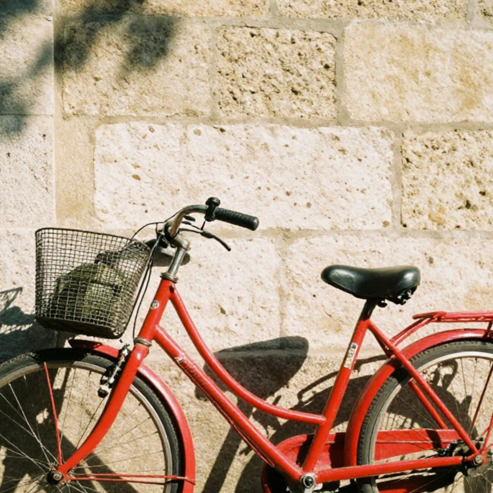

The search sits at the top of the sidebar, where it serves both panes, and the day-grouped history sits under the sources — so what you made today is visible without leaving the canvas. Search and the scope chips are one control: typing on the canvas switches to Library showing the hits, and clearing the field puts you back. Search, chips and queue hold still in both panes; below them the sidebar suits the pane — today's history while you generate, albums and imported source images while you file.
3a
Canvas pane — today's work in reach
The picture keeps the whole pane and the capsule floats on it, as today. Today's output sits in the sidebar in two columns, so the filmstrip over the capsule shrinks to the current run — four seeds of one prompt, and nothing else competing with the image.
Zephra
Denoising · step 3 of 4 · 8.2 s/step · 1 queued
Canvas
Library
Z-Image Turbo · 8-bit
Search prompts and seeds⌘F
All
Favourites
Qwen
Queue
Clear
a red bicycle against a limestone wall
the same wall, no bicycle1024 × 1024
Library
All images1,284
Favourites38
Last 7 days96
Models
Z-Image Turbo867
Qwen-Image 2512417
Tags
street at nighttypography tests
Today14
Show all 1,284 in Library
Recently deleted

a red bicycle against a limestone wall, hard afternoon shadow
Size
1024 × 1024
Steps
4
Seed
2B7A·40E1
1
Generate
This run · 4 seedsSee all 1,284 in Library
3b
Library pane — the sidebar manages, the pane browses
The pane holds the day groups at full size, so the sidebar stops repeating them and does the managing instead: albums you file images into, and the imported source images a reference-guided generation would start from. Search, chips and the queue are unchanged above them, and whatever narrowed the view — a source, an album, a chip, a search — shows as a removable token over the grid.
Zephra
Denoising · step 3 of 4 · 1 queued
Canvas
Library
Newest first
Search prompts and seeds⌘F
All
Favourites
Qwen
Queue
Clear
a red bicycle against a limestone wall
the same wall, no bicycle1024 × 1024
Library
All images1,284
Favourites38
Last 7 days96
Models
Z-Image Turbo867
Qwen-Image 2512417
Tags
street at nighttypography tests
AlbumsNew
Tokyo alleys42
Sign and type tests18
Bench robots26
Source imagesImport
＋
Drop a picture here to use it as a reference.
Recently deleted
Favourites
38 images · 1 selected
Size
Today
4 favourites
1 September
6 favourites
31 August
4 favourites
a rain-slick Tokyo alley at night, neon signs, a cat on a crate
ModelQwen-Image 2512 · 4-bit
Size1024 × 1024
Steps4
Seed14F3·AF7E
Took33.6 s · 8.2 s/step
Filezephra-20260902-140504.png
street at night
keep
＋ tag
Open in canvas⏎
Queue a variation
Reveal in Finder
What holds it together
One search field, one set of scope chips, one queue, one history — at the top of a sidebar that is byte-identical between panes. ⌘F focuses it from either view; a query or a source opens Library with the hits; Open in canvas or ⏎ returns with that image's settings loaded, so a browse always ends where the work is. The sidebar's lower half is the one thing that changes with the pane, and it changes to suit it: today's two-column history while you are generating, albums and imported source images while you are filing. Everything above it — search, chips, queue, sources — holds still. Built on the shell, capsule, filmstrip, queue and safelight values recreated from the Zephra source.